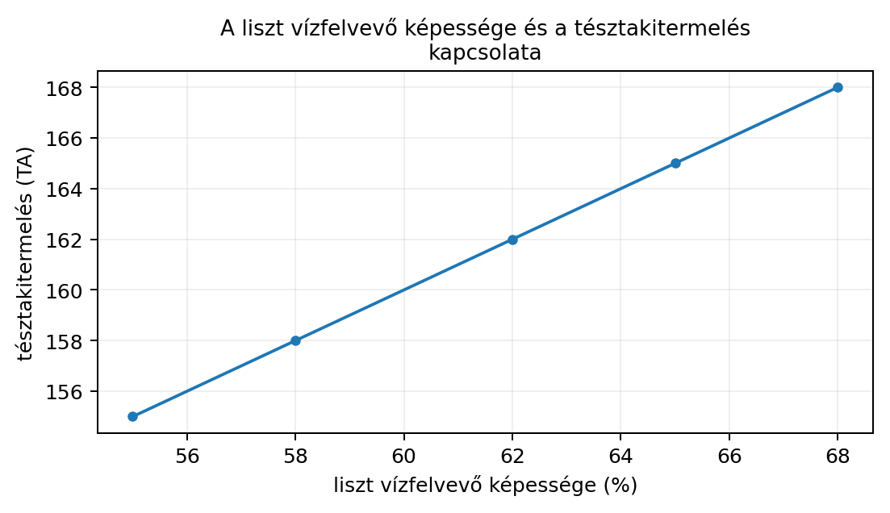

A pék nem csak lisztet kap, hanem egy viselkedő alapanyagot. Ugyanaz a recept két különböző lisztből teljesen más eredményt adhat: az egyik tészta szép sima, rugalmas, a másik ragad, folyik, a kenyér lapos lesz. Ha a pék nem tudja, mi a különbség a liszt sikér-, víz- és enzimtulajdonságaiban, csak tippelget.
Ebben az alfejezetben megtanulod, mit mondanak a liszt legfontosabb technológiai adatai, és hogyan lehet belőlük előre látni, milyen tésztát, kenyérbélzetet kapunk. Ez az alapja a helyes tésztakészítésnek, a kovászolásnak és a hibakeresésnek is.
A liszt egyik legfontosabb tulajdonsága, hogy mennyi vizet vesz fel, amíg a tészta eléri a kívánt állagot. Ez a vízfelvevő képesség. Ha a liszt 65% vizet vesz fel, akkor 100 kg liszthez 65 kg vizet adunk, és a liszt és a víz együtt 165 kg lesz. Ezt a lisztre vetített (liszt + víz) tömeget nevezzük tésztakitermelésnek (TA): a TA azt mutatja meg, hány kg liszt+víz keverék jut 100 kg lisztre; jele szám, % nélkül (például TA 165). A tényleges tésztatömeg ennél több, mert só, élesztő és egyéb anyag is kerül bele (ez a tésztahozam).

A grafikonon látszik, hogy minél nagyobb a liszt vízfelvevő képessége, annál magasabb lehet a tésztakitermelés. Ez a péknek azért fontos, mert a vízből lesz a tészta rugalmassága, a kenyér bélzetének puhasága, és a víz gazdaságilag is meghatározza a kihozatalt.
A búzaliszt különleges képessége, hogy vízzel dagasztva rugalmas, nyújtható hálózatot képez. Ezt a hálózatot a liszt két fehérjefrakciója, a glutenin és a gliadin hozza létre.
Definíció. A sikér (glutén) a búzaliszt vízben oldhatatlan fehérjekomplexe, amely a dagasztás során összefüggő, rugalmas vázat alkot. A glutenin adja a szilárdságot és a rugalmasságot, a gliadin pedig a nyújthatóságot és a folyós tulajdonságot.
Amikor lisztet vízzel keverünk, a fehérjék megduzzadnak. Dagasztáskor a mechanikai munka összekapcsolja a fehérjemolekulákat, és kialakul a sikérháló. Ez a háló fogja meg az erjedés közben keletkező szén-dioxidot, ezért tud a kenyértészta megkelni.
A sikér mennyiségét és minőségét két mutatóval jellemezzük:
Definíció. A nedves sikér a lisztből vízzel kimosott, vízzel telített sikér tömege a liszt tömegéhez viszonyítva, százalékban kifejezve. Például a BL 55 liszt nedves sikértartalma jellemzően 26–32% között van (ellenőrizendő: lisztvizsgálati szabvány és beszállítói specifikáció).
Definíció. A sikérterülés a nedves sikérgolyó meghatározott idő és feltételek mellett mért szétterülési mérete. Ha a sikérterülés kicsi, a sikér erős, rugalmas. Ha nagy, a sikér gyenge, könnyen nyúlik, de hamar elengedi a gázt.
A sikér kimosásának elvét az alábbi képsor mutatja: a lisztből vízzel tésztagolyót gyúrunk (1), majd vékony vízsugár alatt, szita fölött mossuk – a lefolyó víz tejszerű, mert a keményítő kimosódik (2); amikor a víz kitisztul, a kézben a nedves sikér marad (3). A kinyomkodott sikérgolyót lemérjük (4), majd nyújtással (5) és a terülés mérésével (6) a minőségét ítéljük meg.
A képsor a kézi elvet mutatja; a szabványos vizsgálatot géppel, meghatározott liszt- és sóoldat-mennyiséggel és idővel végzik (ellenőrizendő: vonatkozó MSZ/ISO módszer). A mintaszám (8,1 g) csak illusztráció. A HTML-kiadásban a lépéseket egyenként is végignézheted.
Szabály. A jó búzakenyérlisztnek elegendő mennyiségű és megfelelő minőségű sikérre van szüksége: se túl kevés, se túl gyenge. A sikér mennyisége és terülése együtt határozza meg, hogy a tészta mennyire bírja az erjedést és a formázást.
Megjegyzés. A rozsliszt is tartalmaz fehérjéket, de azok nem képeznek olyan összefüggő sikérhálót, mint a búza. Ezért a rozstészta szerkezete nem a sikéren, hanem a keményítőn és a pentozánokon alapul; erről később lesz szó.
A liszt vízfelvevő képessége az a vízmennyiség, amelyet a liszt fel tud venni, hogy a tészta elérje a szabványos, jól formázható állapotot. Ez nem csak a fehérjéktől, hanem a keményítőtől, a rosttól és a liszt sérült keményítőtartalmától is függ.
Definíció. A vízfelvevő képesség az a vízmennyiség a liszt százalékában, amely egy meghatározott tésztakonzisztencia eléréséhez szükséges. Jele például , mértékegysége %.
Összefüggés. Ha a liszt vízfelvevő képessége , akkor 100 kg liszthez vizet adunk. A tésztakitermelés:
Például ha , akkor (liszt + víz együtt 162 kg 100 kg lisztre).
A tésztakitermelés azonban nem csak a liszt vízfelvételétől függ: a receptben lévő egyéb anyagok (tej, tojás, zsiradék, cukor) is befolyásolják, és a pék a kívánt tésztakeménység szerint állítja be. A liszt vízfelvétele a kiindulópont.
Továbbvitt eredmény. A vízfelvevő képességből számolt TA közvetlenül használjuk a Tésztahozam, termékhozam, kihozatal és veszteségek alfejezetben, és ez az alap a Anyagnorma, rendelésből anyagszükséglet számításaihoz is.
A lisztben a gabonaszemből származó enzimek is vannak, amelyek a keményítőt bontják. A pék szempontjából a legfontosabb az alfa-amiláz és a béta-amiláz.
Definíció. Az amilázok olyan keményítőbontó enzimek, amelyek a keményítőt kisebb cukormolekulákra (dextrinekre, maltózra) hasítják. Az alfa-amiláz a keményítőt belülről, gyorsan darabolja, a béta-amiláz a láncvégekről maltózt szabadít fel.
Az amilázokra az erjedés során van szükség: az élesztő ugyanis csak egyszerű cukrokat tud fogyasztani. A sérült keményítőt az amilázok bontják olyan cukrokká, amelyekből az élesztő szén-dioxidot és alkoholt termel. Ha nincs elég amiláz, az élesztő éhezik, a tészta lassan kel, a kenyér héja sápadt lesz, a bélzet száraz.
Az amilázaktivitás mérésére használják a sütőipari esési számot (Hagberg-féle esési szám).
Definíció. Az esési szám azt mutatja meg, hogy egy liszt és víz meghatározott arányú, forró vízfürdőben lévő keverékében a keverőrúd hány másodperc alatt süllyed le. Minél több az alfa-amiláz, annál gyorsabban hígul a keményítő, annál kisebb az esési szám.
A gyakorlati értelmezés (tanulási példa, ellenőrizendő: lisztvizsgálati szabvány és beszállítói specifikáció):
A pontos határokat a liszt felhasználási célja és a laboratóriumi szabvány határozza meg; a fenti számok irányadó tanulási értékek.
Hiba. Ha a pék nem nézi az esési számot, előfordulhat, hogy egy alacsony esési számú lisztből a szokásos vízzel dagaszt, és a tészta szétfolyik a kelesztőben. Ilyenkor vagy kevesebb vizet kell adni, vagy a tésztát hűvösebben, rövidebb ideig keleszteni, esetleg kovásszal, savanyítással fékezni az amiláz működését.
Továbbvitt eredmény. Az esési szám és az amilázaktivitás a legfontosabb bemenő adat az A kovászolás célja és a kovász technológiai mutatói és az A tésztaérés folyamatai és az átgyúrás alfejezetekben; a rozsliszt savanyításának indoka is ebből ered.
A rozsliszt más módon viselkedik, mint a búzaliszt. A fő különbség a pentozánokban van.
Definíció. A pentozánok a rozslisztben nagy mennyiségben előforduló, nem keményítő típusú poliszacharidok. Vízben erősen duzzadnak, nyálkás, viszkózus oldatot képeznek, és a víz jelentős részét megkötik.
A rozstésztában a pentozánok és a keményítő alkotják a szerkezetet, nem a sikér. Ezért a rozstészta általában lágyabb, ragadósabb, és kevésbé rugalmas, mint a búzatészta.
A rozsliszt másik fontos jellemzője, hogy amilázaktivitása gyakran eleve magas (például csírázás miatt). A rozskeményítő alacsonyabb hőmérsékleten csirizesedik, amikor az amiláz még működik; a csirizes keményítőt az amiláz gyorsan bontja. Ha ezt nem fékezzük (savanyítással), a bélzet ragacsos, nyúlós lesz, a kenyér közepén „nyers” csík maradhat.
Szabály. A rozsos tésztákat savanyítani kell. A savas közeg (pH csökkenés) csökkenti az amilázok aktivitását, javítja a pentozánok duzzadását, és kellemes, enyhén savanykás ízt ad. A hagyományos eszköz a rozskovász, amely tejsav- és ecetsavtermelő baktériumokat tartalmaz.
Összefüggés. A rozsliszt arányának növelésével a tésztában nő a vízfelvevő képesség, de romlik a gáztartó képesség, ezért a rozskenyér tésztája puhább, lazább, és a kelesztési idő rövidebb, a sütési idő viszont hosszabb lehet.
Továbbvitt eredmény. A rozsliszt pentozán-tulajdonságait és a savanyítás szükségességét használjuk a Rozsos kenyér és rozskenyér alfejezetben, valamint az A kovászolás célja és a kovász technológiai mutatói részben.
A liszt alkotórészei nem maradnak változatlanok: a dagasztás, az erjedés (érés) és a sütés során átalakulnak.
Dagasztás közben a fehérjék vízzel érintkezve duzzadnak, a mechanikai munka hatására összekapcsolódnak, és kialakul a sikérháló. A keményítőszemcsék megduzzadnak, de még nem csirizesednek el. A víz egy része a fehérjékhez, másik része a keményítőhöz, a rosthoz és a pentozánokhoz kötődik.
Az érés (erjedés) során az amilázok bontják a sérült keményítőt, cukrok keletkeznek, az élesztő ezekből szén-dioxidot és alkoholt termel. A sikérháló a gáz hatására kinyúlik, a tészta lazul. A baktériumok (főleg kovászos tésztákban) savakat termelnek, ami befolyásolja a tészta pH-ját és ízét.
A sütés során a hőmérséklet emelkedésével a búzakeményítő kb. 55–65 °C-tól csirizesedik, és a víz megkötésével a bélzet szerkezete megszilárdul. A sikérfehérjék kb. 60–75 °C között alvadnak (denaturálódnak), merev vázat adnak (tanulási értékek, ellenőrizendő). A tészta tömör, formázott állapotból laza, átsült kenyérbélzetté alakul.
Megjegyzés. A sütőipari minőségvizsgálatban ezeket a tulajdonságokat mérik: a nedves sikért, a sikérterülést, az esési számot, a vízfelvevő képességet és a próbasütési eredményeket. A mérési módszereket az A liszt sütőipari vizsgálatai alfejezet ismerteti.
1. példa. Egy pék BL 55 lisztet kap az alábbi vizsgálati adatokkal (tanulási példa, ellenőrizendő): - Nedves sikér: 29% - Sikérterülés: 4 mm - Esési szám: 280 s - Vízfelvevő képesség: 61%
Mit jelent ez a pékségi gyakorlatban?
Megoldás. A nedves sikér 29% a tipikus kenyérliszt tartományban van, tehát a liszt elegendő fehérjét tartalmaz. A sikérterülés 4 mm közepes, ami rugalmas, normál nyújthatóságú sikért jelez. Az esési szám 280 s a normál tartományban van, tehát az amilázaktivitás kiegyensúlyozott. A vízfelvevő képesség 61% azt jelenti, hogy 100 kg liszthez kb. 61 kg vizet adhatunk.
Ha a pék 100 kg lisztből dolgozik, akkor a tésztakitermelés: A liszt és a víz együtt: A 2 kg só és 3 kg élesztő miatt a tészta kb. 166 kg (tanulási példa).
Ez a liszt várhatóan jól kezelhető, rugalmas tésztát ad, megfelelő kelesztéssel és sütéssel szép kenyeret eredményez.
2. példa. Egy másik liszt adatai: - Nedves sikér: 24% - Sikérterülés: 7 mm - Esési szám: 180 s - Vízfelvevő képesség: 58%
Mit érdemes a péknek másképp csinálni?
Megoldás. A nedves sikér alacsonyabb, a sikérterülés magas, tehát a sikér gyengébb. Az esési szám alacsony, erős amilázaktivitást jelez. Ez a tészta gyorsan hígul, ragadni fog, és a gáztartó képessége rossz. A péknek: - kevesebb vizet kell adnia (például 58–55% között), - hűvösebb tésztát kell készítenie, vagy rövidebb kelesztést alkalmaznia, - kerülnie kell a túl hosszú átgyúrás utáni pihentetést, - esetleg kovásszal vagy savanyítással fékeznie az amilázt. Ez a liszt inkább laposabb termékekre, vagy kisebb tételekben való gyors feldolgozásra alkalmas; kenyérnek nem ideális.
Egy kis pékségben a pék új lisztszállítmányt kapott. A liszt ugyanaz a típus volt, mint korábban (BL 80), de a tészta az első dagasztásnál feltűnően lágy, ragadós lett, a kenyér pedig a kelesztőben szétterült. A pék ellenőrizte a beszállítói minőségi bizonylatot: az esési szám 190 s volt, a szokásos 290 s helyett. Rájött, hogy ez a liszt erősebb amilázaktivitású, ezért a megszokott vízmennyiséggel túl lágy tésztát kapott. Csökkentette a vizet, a tésztát hűvösebben dagasztotta, és rövidebb ideig kelesztette. A következő kenyerek már megfelelőek lettek. Tanulság: a lisztminőségi adatokat minden új szállítmánynál meg kell nézni, és a receptet hozzá kell igazítani.
A pék a gyakorlatban a következőket ellenőrzi a lisztminőséggel kapcsolatban:
A minőségi eltérés jele lehet: a tészta gyorsan lágyul, szétfolyik, a kenyér bélzete ragacsos, nyúlós, a héj sápadt, a térfogat kicsi.
A pék figyelmen kívül hagyja az esési számot. Tünet: a tészta kelesztés közben szétfolyik, a kenyér lapos. Ok: erős amilázaktivitású liszt. Megoldás: kevesebb víz, hűvösebb tészta, rövidebb kelesztés, savanyítás.
A rozslisztet ugyanúgy kezeli, mint a búzalisztet, nem savanyít. Tünet: a rozskenyér bélzete ragacsos, nyúlós, a héj repedezett. Ok: a pentozánok és a hőálló amilázok miatt a keményítő túlzottan lebomlik. Megoldás: rozskovász vagy savanyító anyag, alacsonyabb pH.
A sikér mennyiségét összekeveri a sikér minőségével. Tünet: a pék csak a nedves sikér értéket nézi, és nem érti, miért folyik a tészta, ha a sikér % magas. Ok: a sikérterülés nagy, a sikér gyenge. Megoldás: mindig együtt értékelni a sikér mennyiségét és terülését.
Válaszok a Megoldások elején.
1. feladat (A). Definiáld a sikért, és nevezd meg a két fő alkotó fehérjét.
2. feladat (A). Egy liszt vízfelvevő képessége 60%. Számítsd ki a tésztakitermelést (TA), ha 150 kg liszthez a vízfelvételnek megfelelő vizet adunk. Mennyi lesz a liszt és a víz együttes tömege?
3. feladat (B). Egy liszt esési száma 320 s. Értelmezd az értéket! Milyen lehet az amilázaktivitás? Milyen hibákra számíthat a pék, ha nem figyel erre?
4. feladat (B). Magyarázd el, miért viselkedik másképp a rozstészta, mint a búzatészta! Melyik anyagcsoport felelős a rozs nagy vízfelvevő képességéért, és miért fontos a savanyítás?
5. feladat (C). Egy pék két liszt közül választhat: - Liszt X: nedves sikér 30%, sikérterülés 3 mm, esési szám 270 s, vízfelvevő képesség 63%. - Liszt Y: nedves sikér 26%, sikérterülés 6 mm, esési szám 210 s, vízfelvevő képesség 59%. Melyiket választanád egy búzakenyérhez? Indokold a döntést a sikér, a víz és az amiláz szempontjából!
6. feladat (D). Üzemi hibakeresés: a pék azt tapasztalja, hogy a kenyér bélzete sütés után nyúlós, ragacsos, a héj halvány. A lisztvizsgálati adatok: esési szám 180 s, nedves sikér 27%, sikérterülés 4 mm. Mi lehet a hiba oka? Milyen technológiai módosításokat javasolsz?
Önellenőrzés – válaszok
Feladatok – megoldások
1. feladat (A). A sikér a búzaliszt vízben oldhatatlan fehérjekomplexe, amely dagasztáskor rugalmas vázat alkot. Két fő fehérjéje: glutenin (rugalmasság, szilárdság) és gliadin (nyújthatóság). ∎
2. feladat (A). Adott: vízfelvevő képesség = 60%, liszt = 150 kg. Keresett: TA és a liszt + víz együttes tömege. Víz = 150 kg × 0,60 = 90 kg. TA = (150 kg + 90 kg) / 150 kg × 100 = 160. Liszt + víz együtt = 150 kg + 90 kg = 240 kg (a tényleges tésztatömeg a só, élesztő stb. miatt valamivel nagyobb). Ellenőrzés: 240 kg / 150 kg = 1,6, azaz TA 160. ∎
3. feladat (B). Az esési szám 320 s a normál tartomány (kb. 220–300 s) felett, de a 350 s-os erősen gyenge határ alatt van (ellenőrizendő: üzemi előírás, szabvány). Ez mérsékelten gyenge amilázaktivitást jelez: kevesebb cukor képződik az erjedéshez, figyelni kell a kelésre és a héjszínre. Ha a pék nem figyel erre, például magasabb esési számú lisztnél (alacsony amiláz) a tészta lassan kel, a héj sápadt, a kenyér térfogata kisebb; alacsony esési számnál (magas amiláz) a tészta szétfolyhat, a bélzet nyúlós. ∎
4. feladat (B). A rozstészta azért más, mert a rozsliszt fehérjéi nem képeznek erős sikérhálót. A rozsban sok pentozán van, amely erős vízmegkötő, duzzadó poliszacharid; ez adja a nagy vízfelvevő képességet és a nyálkás állagot. A savanyítás azért fontos, mert a rozs amilázai hőállóbbak, és savas pH-n csökken az aktivitásuk, így a sütés közben nem bontják túl a keményítőt, a bélzet nem lesz ragacsos. ∎
5. feladat (C). Búzakenyérhez a Liszt X jobb választás. Indoklás: - Nedves sikér: X = 30% magasabb, Y = 26% alacsonyabb. - Sikérterülés: X = 3 mm (erős, rugalmas), Y = 6 mm (gyengébb, nyúlósabb). - Esési szám: X = 270 s (normál), Y = 210 s (alacsony, erős amiláz). - Vízfelvevő képesség: X = 63% (több víz, jobb kihozatal), Y = 59%. A Liszt X erősebb sikérrel, kiegyensúlyozott enzimaktivitással és jobb vízfelvétellel rendelkezik, ezért kenyérhez megbízhatóbb. A Liszt Y inkább lágyabb, gyors feldolgozást igénylő termékekhez való. ∎
6. feladat (D). A tünet (nyúlós, ragacsos bélzet, halvány héj) és az alacsony esési szám (180 s) arra utal, hogy a liszt amilázaktivitása túl erős. A sütés során a keményítő túl gyorsan lebomlik, mielőtt a sikérváz stabilizálódna, és a bélzet nem tud megszilárdulni. Javasolt módosítások: - Csökkentsd a vízmennyiséget (alacsonyabb TA). - Készíts hűvösebb tésztát, és alkalmazz rövidebb kelesztést. - Alkalmazz kovászt vagy savanyító anyagot (alacsonyabb pH, fékezett amiláz). - Gyorsítsd a feldolgozást, ne hagyd túlkelni. - Ha lehetséges, keverj hozzá alacsonyabb amilázaktivitású lisztet, vagy használd a lisztet kisebb arányban. ∎
A liszt technológiai tulajdonságai határozzák meg, hogyan viselkedik a tészta a dagasztás, az erjedés és a sütés során. A búzaliszt legfontosabb összetevője a sikér: a glutenin és a gliadin vízzel dagasztva rugalmas hálózatot képez, amely megtartja az erjedéskor keletkező szén-dioxidot. A sikér mennyiségét a nedves sikér százaléka, minőségét a sikérterülés mutatja. A liszt vízfelvevő képessége határozza meg a tésztakitermelést: ha a liszt 100%, akkor TA = 100 + vízfelvétel %. Az amilázok a keményítőt bontják cukrokká; az esési szám alacsony értéke erős amilázaktivitást, híguló tésztát, nyúlós bélzetet jelez, a magas érték gyenge aktivitást, lassú kelést és halvány héjat. A rozslisztben a pentozánok veszik fel a vizet és adják a nyálkás állagot; a rozstésztát savanyítani kell, hogy a hőálló amilázok ne bontsák túl a keményítőt. A liszt minőségi adatait minden szállítmánynál ellenőrizni kell, és a receptet hozzá kell igazítani. A fogalmak és adatok az A liszt mikroflórája, liszthibák és lisztromlás, az A kovászolás célja és a kovász technológiai mutatói, az A dagasztás célja és a tészta kialakulása, a Rozsos kenyér és rozskenyér és az A liszt sütőipari vizsgálatai alfejezetekben hasznosulnak.